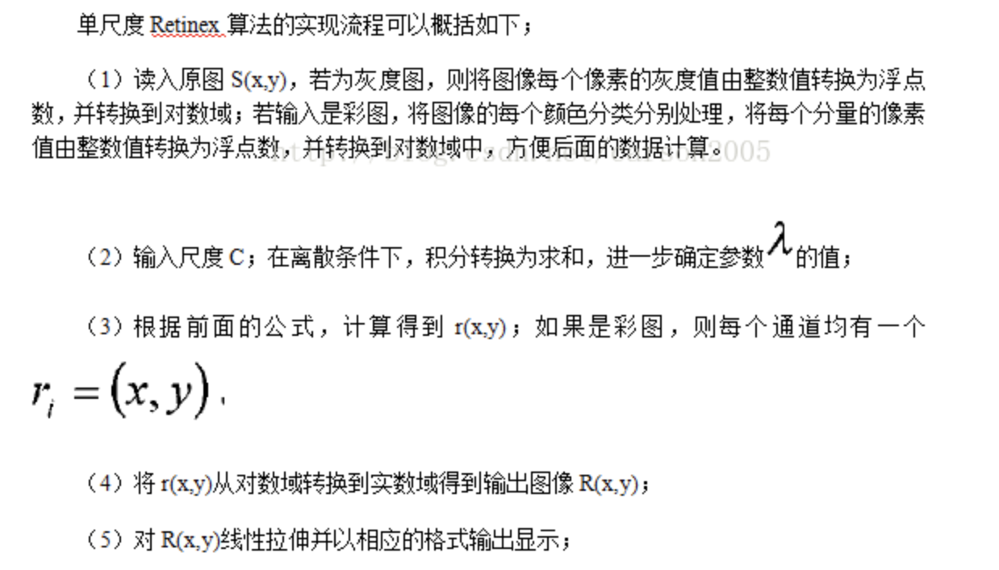

<!DOCTYPE html>
<html lang="en">
<head><meta name="generator" content="Hexo 3.9.0">
    <meta charset="utf-8">
    
    <title>LightEnhancement | neverfelly&#39;s Wiki</title>
    
    
        <meta name="keywords" content="DeepLearning,Visions">
    
    <meta name="viewport" content="width=device-width, initial-scale=1, maximum-scale=1">
    <meta name="description" content="MethodsTraditionalRetinex tranditional vision Based on equation $S(x, y)=R(x,y)L(x,y)$ $r(x,y)=\log S(x,y)-\log [F(x,y)\ast S(x,y)]$ ,$\ast$ denote convolution，$F(x,y)=\lambda e^{-(x^2+y^2)\over c^2}$">
<meta name="keywords" content="DeepLearning,Visions">
<meta property="og:type" content="article">
<meta property="og:title" content="LightEnhancement">
<meta property="og:url" content="http://wiki.rechinx.top/wiki/ComputerScience/ComputerVision/LightEnhancement/index.html">
<meta property="og:site_name" content="neverfelly&#39;s Wiki">
<meta property="og:description" content="MethodsTraditionalRetinex tranditional vision Based on equation $S(x, y)=R(x,y)L(x,y)$ $r(x,y)=\log S(x,y)-\log [F(x,y)\ast S(x,y)]$ ,$\ast$ denote convolution，$F(x,y)=\lambda e^{-(x^2+y^2)\over c^2}$">
<meta property="og:locale" content="en">
<meta property="og:image" content="http://wiki.rechinx.top/wiki/ComputerScience/ComputerVision/LightEnhancement/ssr.png">
<meta property="og:updated_time" content="2020-11-25T02:34:11.297Z">
<meta name="twitter:card" content="summary">
<meta name="twitter:title" content="LightEnhancement">
<meta name="twitter:description" content="MethodsTraditionalRetinex tranditional vision Based on equation $S(x, y)=R(x,y)L(x,y)$ $r(x,y)=\log S(x,y)-\log [F(x,y)\ast S(x,y)]$ ,$\ast$ denote convolution，$F(x,y)=\lambda e^{-(x^2+y^2)\over c^2}$">
<meta name="twitter:image" content="http://wiki.rechinx.top/wiki/ComputerScience/ComputerVision/LightEnhancement/ssr.png">
    

    
        <link rel="alternate" href="/atom.xml" title="neverfelly&#39;s Wiki" type="application/atom+xml">
    

    
        <link rel="icon" href="/favicon.ico">
    

    <link rel="stylesheet" href="/libs/font-awesome/css/font-awesome.min.css">
    <link rel="stylesheet" href="/libs/open-sans/styles.css">
    <link rel="stylesheet" href="/libs/source-code-pro/styles.css">

    <link rel="stylesheet" href="/css/style.css">
    <script src="/libs/jquery/2.1.3/jquery.min.js"></script>
    <script src="/libs/jquery/plugins/cookie/1.4.1/jquery.cookie.js"></script>
    
    
        <link rel="stylesheet" href="/libs/lightgallery/css/lightgallery.min.css">
    
    
        <link rel="stylesheet" href="/libs/justified-gallery/justifiedGallery.min.css">
    
    
    
    


    
        <script async src="//busuanzi.ibruce.info/busuanzi/2.3/busuanzi.pure.mini.js"></script>
    
</head>
</html>
<body>
    <div id="container">
        <header id="header">
    <div id="header-main" class="header-inner">
        <div class="outer">
            <a href="/" id="logo">
                <i class="logo"></i>
                <span class="site-title">neverfelly&#39;s Wiki</span>
            </a>
            <nav id="main-nav">
                
                    <a class="main-nav-link" href="/">首页</a>
                
                    <a class="main-nav-link" href="/archives">归档</a>
                
                    <a class="main-nav-link" href="/categories">分类</a>
                
                    <a class="main-nav-link" href="/tags">标签</a>
                
                    <a class="main-nav-link" href="/about">关于</a>
                
            </nav>
            
            <div id="search-form-wrap">

    <form class="search-form">
        <input type="text" class="ins-search-input search-form-input" placeholder="Search" />
        <button type="submit" class="search-form-submit"></button>
    </form>
    <div class="ins-search">
    <div class="ins-search-mask"></div>
    <div class="ins-search-container">
        <div class="ins-input-wrapper">
            <input type="text" class="ins-search-input" placeholder="Type something..." />
            <span class="ins-close ins-selectable"><i class="fa fa-times-circle"></i></span>
        </div>
        <div class="ins-section-wrapper">
            <div class="ins-section-container"></div>
        </div>
    </div>
</div>
<script>
(function (window) {
    var INSIGHT_CONFIG = {
        TRANSLATION: {
            POSTS: 'Posts',
            PAGES: 'Pages',
            CATEGORIES: 'Categories',
            TAGS: 'Tags',
            UNTITLED: '(Untitled)',
        },
        ROOT_URL: '/',
        CONTENT_URL: '/content.json',
    };
    window.INSIGHT_CONFIG = INSIGHT_CONFIG;
})(window);
</script>
<script src="/js/insight.js"></script>

</div>
        </div>
    </div>
    <div id="main-nav-mobile" class="header-sub header-inner">
        <table class="menu outer">
            <tr>
                
                    <td><a class="main-nav-link" href="/">首页</a></td>
                
                    <td><a class="main-nav-link" href="/archives">归档</a></td>
                
                    <td><a class="main-nav-link" href="/categories">分类</a></td>
                
                    <td><a class="main-nav-link" href="/tags">标签</a></td>
                
                    <td><a class="main-nav-link" href="/about">关于</a></td>
                
                <td>
                    
    <div class="search-form">
        <input type="text" class="ins-search-input search-form-input" placeholder="Search" />
    </div>

                </td>
            </tr>
        </table>
    </div>
</header>

        <div class="outer">
            
            
                <aside id="sidebar">
   
        
    <div class="widget-wrap" id='categories'>
        <h3 class="widget-title">
            <span>categories</span>
            &nbsp;
            <a id='allExpand' href="#">
                <i class="fa fa-angle-double-down fa-2x"></i>
            </a>
        </h3>
        
        
        
         <ul class="unstyled" id="tree" > 
                    <li class="directory open">
                        <a href="#" data-role="directory">
                            <i class="fa fa-folder-open"></i>
                            &nbsp;
                            ComputerScience
                        </a>
                         <ul class="unstyled" id="tree" > 
                    <li class="directory open">
                        <a href="#" data-role="directory">
                            <i class="fa fa-folder-open"></i>
                            &nbsp;
                            ComputerVision
                        </a>
                         <ul class="unstyled" id="tree" >  <li class="file active"><a href="/wiki/ComputerScience/ComputerVision/LightEnhancement/">LightEnhancement</a></li>  </ul> 
                    </li> 
                     </ul> 
                    </li> 
                     <li class="file"><a href="/wiki/hello-world/">Hello World</a></li>  </ul> 
    </div>
    <script>
        $(document).ready(function() {
            var iconFolderOpenClass  = 'fa-folder-open';
            var iconFolderCloseClass = 'fa-folder';
            var iconAllExpandClass = 'fa-angle-double-down';
            var iconAllPackClass = 'fa-angle-double-up';
            // Handle directory-tree expansion:
            // 左键单独展开目录
            $(document).on('click', '#categories a[data-role="directory"]', function (event) {
                event.preventDefault();

                var icon = $(this).children('.fa');
                var expanded = icon.hasClass(iconFolderOpenClass);
                var subtree = $(this).siblings('ul');
                icon.removeClass(iconFolderOpenClass).removeClass(iconFolderCloseClass);
                if (expanded) {
                    if (typeof subtree != 'undefined') {
                        subtree.slideUp({ duration: 100 });
                    }
                    icon.addClass(iconFolderCloseClass);
                } else {
                    if (typeof subtree != 'undefined') {
                        subtree.slideDown({ duration: 100 });
                    }
                    icon.addClass(iconFolderOpenClass);
                }
            });
            // 右键展开下属所有目录
            $('#categories a[data-role="directory"]').bind("contextmenu", function(event){
                event.preventDefault();
                
                var icon = $(this).children('.fa');
                var expanded = icon.hasClass(iconFolderOpenClass);
                var listNode = $(this).siblings('ul');
                var subtrees = $.merge(listNode.find('li ul'), listNode);
                var icons = $.merge(listNode.find('.fa'), icon);
                icons.removeClass(iconFolderOpenClass).removeClass(iconFolderCloseClass);
                if(expanded) {
                    subtrees.slideUp({ duration: 100 });
                    icons.addClass(iconFolderCloseClass);
                } else {
                    subtrees.slideDown({ duration: 100 });
                    icons.addClass(iconFolderOpenClass);
                }
            })
            // 展开关闭所有目录按钮
            $(document).on('click', '#allExpand', function (event) {
                event.preventDefault();
                
                var icon = $(this).children('.fa');
                var expanded = icon.hasClass(iconAllExpandClass);
                icon.removeClass(iconAllExpandClass).removeClass(iconAllPackClass);
                if(expanded) {
                    $('#sidebar .fa.fa-folder').removeClass('fa-folder').addClass('fa-folder-open')
                    $('#categories li ul').slideDown({ duration: 100 });
                    icon.addClass(iconAllPackClass);
                } else {
                    $('#sidebar .fa.fa-folder-open').removeClass('fa-folder-open').addClass('fa-folder')
                    $('#categories li ul').slideUp({ duration: 100 });
                    icon.addClass(iconAllExpandClass);
                }
            });  
        });
    </script>

    
    <div id="toTop" class="fa fa-angle-up"></div>
</aside>
            
            <section id="main"><article id="post-ComputerScience/ComputerVision/LightEnhancement" class="article article-type-post" itemscope itemprop="blogPost">
    <div class="article-inner">
        
        
            <header class="article-header">
                
                    <div class="article-meta">
                        
    <div class="article-category">
    	<i class="fa fa-folder"></i>
        <a class="article-category-link" href="/categories/ComputerScience/">ComputerScience</a><i class="fa fa-angle-right"></i><a class="article-category-link" href="/categories/ComputerScience/ComputerVision/">ComputerVision</a>
    </div>

                        
    <div class="article-tag">
        <i class="fa fa-tag"></i>
        <a class="tag-link" href="/tags/DeepLearning/">DeepLearning</a>, <a class="tag-link" href="/tags/Visions/">Visions</a>
    </div>

                        
    <div class="article-date">
        <i class="fa fa-calendar"></i>
        <a href="/wiki/ComputerScience/ComputerVision/LightEnhancement/">
            <time datetime="2019-08-25T11:30:16.000Z" itemprop="datePublished">2019-08-25</time>
        </a>
    </div>


                        
                            <i class="fa fa-bar-chart"></i>
                            <span id="busuanzi_container_site_pv"><span id="busuanzi_value_page_pv"></span></span>    
                        
                        
                            <div class="article-meta-button">
                                <a href='https://www.github.com/neverfelly/wiki/neverfelly/wiki/raw/master/source/_posts/ComputerScience/ComputerVision/LightEnhancement.md'> Source </a>
                            </div>
                            <div class="article-meta-button">
                                <a href='https://www.github.com/neverfelly/wiki/neverfelly/wiki/edit/master/source/_posts/ComputerScience/ComputerVision/LightEnhancement.md'> Edit </a>
                            </div>
                            <div class="article-meta-button">
                                <a href='https://www.github.com/neverfelly/wiki/neverfelly/wiki/commits/master/source/_posts/ComputerScience/ComputerVision/LightEnhancement.md'> History </a>
                            </div>
                        
                    </div>
                
                
    
        <h1 class="article-title" itemprop="name">
            LightEnhancement
        </h1>
    

            </header>
        
        
        <div class="article-entry" itemprop="articleBody">
        
        
            
        
        
            <h1 id="Methods"><a href="#Methods" class="headerlink" title="Methods"></a>Methods</h1><h2 id="Traditional"><a href="#Traditional" class="headerlink" title="Traditional"></a>Traditional</h2><h3 id="Retinex"><a href="#Retinex" class="headerlink" title="Retinex"></a>Retinex</h3><ul>
<li>tranditional vision</li>
<li>Based on equation $S(x, y)=R(x,y)L(x,y)$</li>
<li>$r(x,y)=\log S(x,y)-\log [F(x,y)\ast S(x,y)]$ ,$\ast$ denote convolution，$F(x,y)=\lambda e^{-(x^2+y^2)\over c^2}$, which must statisify $\int \int F(x,y)dxdy=1$</li>
<li><ul>
<li><p>SSR 算法流程：</p>
</li>
<li><p>MSR:$r(x,y)=\sum_{k}w_k(\log S(x,y)-\log F_k(x,y)\cdot S(x,y))$ </p>
</li>
<li><p>LIME：1.Initial Illumination map estimation <script type="math/tex">\textbf{L}={\textbf{S}-1+a\over 1-{1\over a}+\max_{c}{\textbf{S}^c \over a}+\epsilon} + (1-a)</script>  2. Illumination map refinement  <script type="math/tex">\min _{\mathbf{T}}\|\hat{\mathbf{T}}-\mathbf{T}\|_{F}^{2}+\alpha \sum_{x} \frac{\mathbf{W}_{h}(x)\left(\nabla_{h} \mathbf{T}(x)\right)^{2}}{\left|\nabla_{h} \hat{\mathbf{T}}(x)\right|+\epsilon}+\frac{\mathbf{W}_{v}(x)\left(\nabla_{v} \mathbf{T}(x)\right)^{2}}{\left|\nabla_{v} \hat{\mathbf{T}}(x)\right|+\epsilon}</script> conclusion: best traditional method</p>
</li>
</ul>
</li>
<li>Retinex based methods suffer from the limitation in model capacity of the decomposition for reflectance and illumination</li>
</ul>
<h3 id="Gradient-based"><a href="#Gradient-based" class="headerlink" title="Gradient based"></a>Gradient based</h3><ul>
<li><p>Advantage : simultaneously apply the gradient-based filtering.</p>
</li>
<li><script type="math/tex; mode=display">q_h(\boldsymbol{x})=f_h(\boldsymbol{x})\cdot L(f(x);\beta, \tau)</script><script type="math/tex; mode=display">L(\xi; \beta, \tau)=\begin{cases} {\beta -1\over 2\tau^2}\xi^2-{\beta-1\over\tau}\xi+\beta & (\xi \le \tau) \\ 1 & (\xi>\tau)\end{cases}</script><p>$f(\boldsymbol{x})$ and $\xi$ denote pixel intensity, $L$ is enhancement function, $q$ denote enhanced pixel</p>
</li>
<li><p>could do optional gradient filtering</p>
</li>
<li><p>don’t know how to code</p>
</li>
</ul>
<h2 id="DeepMethods"><a href="#DeepMethods" class="headerlink" title="DeepMethods"></a>DeepMethods</h2><h3 id="MRS-net"><a href="#MRS-net" class="headerlink" title="MRS-net"></a>MRS-net</h3><ul>
<li><p>Use neural network to process MSR theory, avoid to artificially setting parameters.</p>
</li>
<li><p>Multi-scale retinex is a feedforward CNN with different kernels</p>
<p>For reduction:</p>
<script type="math/tex; mode=display">r_{MSR_i}(x,y)=\log I_i(x,y)-{1\over 3}\log I_i(x,y)\ast [\sum_{n=1}^{3}K_n e^{-{x^2+y^2\over2c_n^2}}]</script><p>Last summation shows that it aims to summarize guassian functions with variance $c_1,c_2,c_3$. And we know that convolution of two gaussian functions is still a gaussian function, so we can reformat it to a cascading structure with three gaussian function convolotion $c_1,c_2-c_1,c_3-c_2$, and concate each level  at last.</p>
</li>
<li><p>Three components: multi=scale loogarithmic transformation: use logarithmic transformation to perform origin image, $n$ procssed images to concate and put into a convolutional layer; difference-of-convolution;color restoration function.</p>
</li>
<li><p>Loss: frobenius norm</p>
</li>
</ul>
<h3 id="Retinex-Net"><a href="#Retinex-Net" class="headerlink" title="Retinex-Net"></a>Retinex-Net</h3><ul>
<li>Three stages: decomposition, enhancement, reconstruction</li>
<li>decomposition: Data driven by nerual network， input: paired normal light and low light, key: low-light image and normal-light image share the same reflectance. </li>
<li>loss: <script type="math/tex">\mathcal{L}=\mathcal{L_{recon}}+\mathcal{\lambda_{r}L_r}+\lambda_{s}\mathcal{L_s}</script>, <script type="math/tex">\mathcal{L_{recon}}=\sum_i\sum_j\lambda_{ij}\vert\vert R_i \circ I_j-S_j\vert\vert_1, i \in （low,normal), j \in (low,normal)</script>, <script type="math/tex">\mathcal{L_r}=||R_{low}-R_{normal}||_1</script> , <strong>novel </strong> improved structure-blinding TV loss(Total variation minimizati) to Structure-Aware Smoothness Loss <script type="math/tex">\mathcal{L_s}=\sum_i||\nabla I_i \circ \exp (-\lambda_g \nabla R_i))||</script> , compared with LIME: LIME is weighted by an inital illumination map estimation, rather it is weighted by reflectance.</li>
<li>Enhancement: encoder-decoder architecture, <strong>multi-scale concatenation</strong> : each resize by nearest-neighbor interpolation to final scale, concatenate to $C \times M$ channel features map, then by convolutional layer reduced and reconstruct the illumination map $\tilde{I}$. Resized-convolutional layer in up-sampling block used for avoid checkerboard pattern of artifacts.</li>
<li>Loss: <script type="math/tex">\mathcal{L}=\mathcal{L_{recon}}+\mathcal{L_s}, \mathcal{L_{recon}}=||R_{low}\circ \hat{I}-S_{normal}||_1</script> </li>
<li>Denoising operated on reflectance</li>
</ul>
<h3 id="Learning-to-see-in-the-dark"><a href="#Learning-to-see-in-the-dark" class="headerlink" title="Learning to see in the dark"></a>Learning to see in the dark</h3><ul>
<li>See-in-the-Dark (SID) dataset contains low-light images with paired ground truth.</li>
<li>what’s on: video capture, denosing, complexity compared to burst image pipeline(graphics TOG 16’)</li>
<li>Adopt pure FCN: based on recent works that pure FCN can effectively represent many image processing algorithms.</li>
<li>process sensor data directly</li>
<li>Context aggregation network and U-Net, not resnet</li>
<li>Metrics: A/B tests with amazon workers , PSNR/SSIM in controlled experiments for image quality</li>
<li>Loss, network architecture and data arrangement are tested in controlled experiments: shown that default pipeline outperforme than others</li>
</ul>
<h3 id="Kindling-the-Darkness-A-Practical-Low-light-image-enhancer-KinD"><a href="#Kindling-the-Darkness-A-Practical-Low-light-image-enhancer-KinD" class="headerlink" title="Kindling the Darkness: A Practical Low-light image enhancer(KinD)"></a>Kindling the Darkness: A Practical Low-light image enhancer(KinD)</h3><ul>
<li><p>Three challenges in low-light image enhancement:</p>
<ul>
<li>Estimate the illumination component from a single image and adjust light levels</li>
<li>Remove degradations after light up dark regions</li>
<li>Train a model without well-defined ground-truth light conditions</li>
</ul>
</li>
<li><p>Contributions: </p>
<ul>
<li>trained with paired images captured under different light/exposure conditions, instead of using any ground-truth reflectance and illumination information.</li>
<li>flexibly adjust light levels</li>
<li>a module for denosing</li>
<li>State-of-the-art</li>
</ul>
</li>
<li><p>Layer decomposition: </p>
<ul>
<li>learn a mapping function from real data for light level adjustment</li>
<li>mutual consistency(edge in $\mathbf{I}$, the penalty on $\mathbf{L}$ is small, for a location in a flat, the penalty turns to be large, so it’s edge awared ): <script type="math/tex">\mathcal{L_{mc}}=||\mathbf{M}\circ \exp(-c \cdot \mathbf{M})||_1，\mathbf{M}=|\nabla\mathbf{L}_l|+|\nabla \mathbf{L}_h|</script></li>
</ul>
</li>
<li><p>Reflectance restoration</p>
<script type="math/tex; mode=display">\mathcal{L}=||\hat{\mathbf{R}}-\mathbf{R}||_2^2-\text{SSIM}(\hat{\mathbf{R}},\mathbf{R_h})+||\nabla\mathbf{\hat{R}}-\nabla\mathbf{R}_h||_2^2</script><p>(question: why can do it? how about previous equation <script type="math/tex">\mathbf{I}=\mathbf{R\circ I}+\mathbf{\hat{E}\circ I}</script>)</p>
</li>
<li><p>Illumination adjustment</p>
<p>Two paramaters for adjustment $\alpha=\mathbf{L_t\over L_s}$,$\gamma=\mathbf{||\log{\hat{L}}||_1\over||\log{L_s}||_1}$ for gamma correction(How to use)</p>
</li>
<li><p>Metrics: PSNR,SSIM,LOE,NIQE</p>
</li>
</ul>
<h3 id="Low-light-image-enhancement-algorithm-based-on-retinex-and-generative-adversarial-network-Retinex-GAN"><a href="#Low-light-image-enhancement-algorithm-based-on-retinex-and-generative-adversarial-network-Retinex-GAN" class="headerlink" title="Low-light image enhancement algorithm based on retinex and generative adversarial network(Retinex-GAN)"></a>Low-light image enhancement algorithm based on retinex and generative adversarial network(Retinex-GAN)</h3><ul>
<li><p>loss</p>
<p>Regular loss: <script type="math/tex">\mathcal{L_{reg}}={1\over mn}\sum_{i=0}^{m-1}\sum_{j=0}^{n-1}{1\over C-f(R(i,j))}</script>, prevent the illumination image from approaching 1 or -1 to avoid that the network falls into a local optimal solution.</p>
<p>multi-task loss: <script type="math/tex">\mathcal{L}=\lambda_{rec}\mathcal{L_{rec}}+\lambda_{dec}\mathcal{L_{dec}}+\lambda_{com}\mathcal{L_{com}}+\lambda_{cGAN}\mathcal{L_{cGAN}}</script> </p>
<p>Smooth L1 loss: <script type="math/tex">\mathcal{L_{L_1}}=smooth_{\mathcal{L_1}}(x)=\begin{cases} 0.5x^2 & if \quad x < 1 \\ x-0.5 & otherwise \end{cases}</script></p>
<p>reconstruction loss: <script type="math/tex">\mathcal{L_{rec}}=\mathcal{L_{rec_x}}+\mathcal{L_{rec_y}}+\mathcal{L_{reg}}</script></p>
<p>decomposition loss: <script type="math/tex">\mathcal{L_{dec}}=\mathcal{L_{L_1}}(I_x,I_y)</script> make the image in different brightness is decomposed to the same illumination images.</p>
<p>SSIM-MS loss: obtain the image details</p>
<p>Composite loss: <script type="math/tex">\mathcal{L_{com}}=\alpha \mathcal{L_{enh}}+(1-\alpha)\mathcal{L}_{ssim\_ms},\mathcal{L_{enh}}=\mathcal{L_{L_{1}}}(y,R_x\cdot I_x^{'})</script>  smooth loss and SSIM to keep structure consistency</p>
</li>
<li><p>Datasets: CSID, converted from see in the dark(SID) dataset</p>
</li>
</ul>
<h3 id="EnlightenGAN"><a href="#EnlightenGAN" class="headerlink" title="EnlightenGAN"></a>EnlightenGAN</h3><ul>
<li><p>without paired supervison</p>
</li>
<li><p>Global-local discriminator</p>
<p>Enhance local regions with randomly croped patches</p>
<p>global loss: LSGAN loss</p>
</li>
<li><p>Self feature preserving loss</p>
<p>Preserve the image content features</p>
<p><script type="math/tex">\mathcal{L}_{SFP}(I^L)={1\over W_{i,j}H_{i,j}}\sum_{x=1}^{W_{i,j}}\sum_{y=1}^{H_{i,j}}(\phi_{i,j}(I^L)-\phi_{i,j}(G(I^L)))^2</script> , $i$ for max pooling, $j$ for convolutional layer after max pooling</p>
<p>local discriminator patches also need to be regularized.</p>
</li>
<li><p>attention : enhance dart region more effectively</p>
<p>Question: self labeled attention map?</p>
</li>
<li><p>Metrics: NIQE</p>
</li>
</ul>
<h3 id="Attention-guided-low-light-image-enhancement"><a href="#Attention-guided-low-light-image-enhancement" class="headerlink" title="Attention-guided low-light image enhancement"></a>Attention-guided low-light image enhancement</h3><ul>
<li><p>solve the denosing and low-light enhancement simultaneously</p>
</li>
<li><p>Datasets: propose a low-light image simulation pipeline to synthesize realistic low-light images</p>
</li>
<li><p>Attention-net: estimate the illumination to guide the attention</p>
<p>U-Net, retinex-based solution faces difficulties in handling black regions, ue-attention map could solve it.</p>
</li>
<li><p>Ehancement-net</p>
<p>decompose original problem into serveral sub-problems(noise removal, texture preserving, color correction)</p>
<p>Five different network architectures(why???)</p>
</li>
<li><p>Reinforce-net: improve contrast and details</p>
</li>
<li><p>Loss: attention: L2. Noise: L1</p>
<p>Enhancement:</p>
<p>bright loss: <script type="math/tex">\mathcal{L_{eb}}=||\mathcal{S}(\mathcal{F_e}(I, A', N')-\tilde{I})||^1, \mathcal{S}=\begin{cases} -\lambda x & x <0 \\x&x\ge 0 \end{cases}</script> , ensure sufficient brightness.</p>
<p>structural loss: SSIM</p>
<p>perceptual loss</p>
<p>region loss: balances the degree of enhancement for different regions:<script type="math/tex">\mathcal{L_{er}}=||I'\cdot A'-\tilde{I}\cdot A'||^1+1-\text{ssim}(I'\cdot A',\tilde{I}\cdot A')</script></p>
<p>$A’$ Is the predicted ue-attention map, $N’$for noise map</p>
<p>Reinforce:</p>
<p>bright loss+structural loss + perceptual loss</p>
</li>
<li><p>Metrics: PSNR, SSIM, AB, VIF, LOE, TMQI, LPIPS</p>
</li>
<li><p>further: blocking artifacts, black regions without any texture, extremely strong noise</p>
</li>
</ul>
<h1 id="References"><a href="#References" class="headerlink" title="References"></a>References</h1><ul>
<li>Guo, Xiaojie. 《LIME: A Method for Low-light IMage Enhancement》. <em>arXiv:1605.05034 [cs]</em>, 2016年5月17日. <a href="http://arxiv.org/abs/1605.05034">http://arxiv.org/abs/1605.05034</a>.</li>
</ul>

            </div>
        
        <footer class="article-footer">
        </footer>
    </div>
</article>


    
<nav id="article-nav">
    
        <a href="/wiki/hello-world/" id="article-nav-newer" class="article-nav-link-wrap">
            <strong class="article-nav-caption">Newer</strong>
            <div class="article-nav-title">
                
                    Hello World
                
            </div>
        </a>
    
    
</nav>


    
    


<!-- baidu url auto push script -->
<script type="text/javascript">
    !function(){var e=/([http|https]:\/\/[a-zA-Z0-9\_\.]+\.baidu\.com)/gi,r=window.location.href,o=document.referrer;if(!e.test(r)){var n="//api.share.baidu.com/s.gif";o?(n+="?r="+encodeURIComponent(document.referrer),r&&(n+="&l="+r)):r&&(n+="?l="+r);var t=new Image;t.src=n}}(window);
</script>     
</section>
        </div>
        <footer id="footer">
    <div class="outer">
        <div id="footer-info" class="inner">
            neverfelly &copy; 2020 
            <a rel="license" href="http://creativecommons.org/licenses/by-nc-nd/4.0/"></a>
            <br> Powered by <a href="http://hexo.io/" target="_blank">Hexo</a>. Theme - <a href="https://github.com/zthxxx/hexo-theme-Wikitten">wikitten</a>
            
                <br>
                <span id="busuanzi_container_site_pv"><i class="fa fa-eye"></i> <span id="busuanzi_value_site_pv"></span></span>
                &nbsp;|&nbsp;
                <span id="busuanzi_container_site_pv"><i class="fa fa-user"></i> <span id="busuanzi_value_site_uv"></span></span>
            
        </div>
    </div>
</footer>

        

    
        <script src="/libs/lightgallery/js/lightgallery.min.js"></script>
        <script src="/libs/lightgallery/js/lg-thumbnail.min.js"></script>
        <script src="/libs/lightgallery/js/lg-pager.min.js"></script>
        <script src="/libs/lightgallery/js/lg-autoplay.min.js"></script>
        <script src="/libs/lightgallery/js/lg-fullscreen.min.js"></script>
        <script src="/libs/lightgallery/js/lg-zoom.min.js"></script>
        <script src="/libs/lightgallery/js/lg-hash.min.js"></script>
        <script src="/libs/lightgallery/js/lg-share.min.js"></script>
        <script src="/libs/lightgallery/js/lg-video.min.js"></script>
    
    
        <script src="/libs/justified-gallery/jquery.justifiedGallery.min.js"></script>
    
    
        <script type="text/x-mathjax-config">
    MathJax.Hub.Config({
        tex2jax: {
            inlineMath: [ ["$","$"], ["\\(","\\)"] ],
            skipTags: ['script', 'noscript', 'style', 'textarea', 'pre', 'code'],
            jax: ["input/TeX","output/SVG"],
            processEscapes: true,
            TeX: {
                equationNumbers: {
                  autoNumber: 'AMS'
                }
            }
        }
    });
    MathJax.Hub.Queue(function() {
        var all = MathJax.Hub.getAllJax();
        for (var i = 0; i < all.length; ++i)
            all[i].SourceElement().parentNode.className += ' has-jax';
    });
</script>
<script async src="//cdnjs.cloudflare.com/ajax/libs/mathjax/2.7.1/MathJax.js?config=TeX-AMS-MML_HTMLorMML"></script>

    


<!-- Custom Scripts -->
<script src="/js/main.js"></script>

    </div>
</body>
</html>